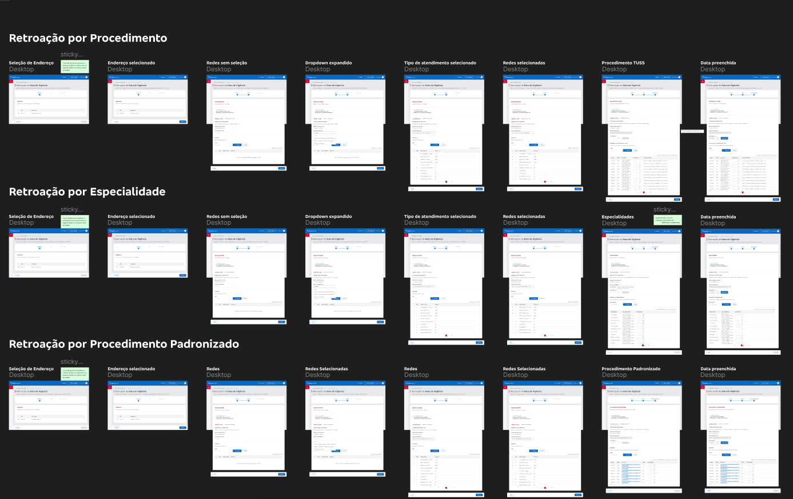

Bradesco Seguros — Modernização de sistema crítico de gestão Bradesco Seguros — Modernization of a critical management system
Da arquitetura rígida ao sistema funcional: redesenho de fluxos críticos que reduziu 20 horas semanais de trabalho manual por funcionário, em apenas 10 meses. From rigid architecture to functional system: redesign of critical flows that reduced manual work by 20 hours per week per employee, in just 10 months.
🤔 O problema
🤔 The problem
O governo brasileiro anunciou que o CNPJ passaria a ser alfanumérico, e não mais apenas numérico. Essa mudança impactou diretamente o sistema vigente, construído em Cobol, uma tecnologia arcaica cuja adaptação exigiria um custo muito alto.
The Brazilian government announced that the CNPJ (National Registry of Legal Entities) would become alphanumeric, rather than just numeric. This change directly impacted the current system, built in Cobol, an archaic technology whose adaptation would require a very high cost.
Paralelamente, já estava em desenvolvimento um novo sistema para a Gestão de Prestadores de Saúde (GPRS). Nesse sistema também foram identificadas inúmeras inconsistências, tanto na estrutura do banco de dados quanto no fluxo e na navegação do sistema antigo.
At the same time, a new system for the Management of Healthcare Providers (GPRS) was already under development. In this system, numerous inconsistencies were also identified, both in the database structure and in the flow and navigation of the old system.
📈 O cenário atual
📈 The current scenario
Entrei no projeto um mês após seu início, já com o time de desenvolvedores e QAs em atividade. Junto ao PO, conduzi o entendimento global de ambos os sistemas e priorizei as demandas mais urgentes do GPRS, para manter o time de desenvolvimento em ritmo de trabalho.
I joined the project one month after it started, with the team of developers and QAs already active. Together with the PO, I conducted a global understanding of both systems and prioritized the most urgent demands of the GPRS to keep the development team working at a steady pace.
O cenário era o seguinte: um sistema arcaico em funcionamento, responsável por 46% do faturamento da empresa; um sistema em criação com diversas inconsistências, construído em uma plataforma no-code/low-code, o que tornava a arquitetura mais rígida; e um prazo desafiador de apenas 10 meses. Como equipe, seguimos a metodologia Scrum para acelerar o aprendizado e tornar as decisões mais eficientes.
The scenario was as follows: an archaic running system, responsible for 46% of the company's revenue; a new system being created with several inconsistencies, built on a no-code/low-code platform, which made the architecture more rigid; and a challenging deadline of only 10 months. As a team, we followed the Scrum methodology to accelerate learning and make decisions more efficient.
🎯 Objetivo de negócio
🎯 Business objective
O objetivo de negócio era direto: o sistema precisava estar pronto até o fim do prazo, sob risco de impactar a operação da empresa. Além disso, era necessário entregar uma interface moderna e de fácil usabilidade.
The business objective was straightforward: the system needed to be ready by the deadline, under the risk of impacting the company's operation. Furthermore, it was necessary to deliver a modern and easy-to-use interface.
Meu objetivo foi construir interfaces funcionais e com boa usabilidade para o usuário final, mesmo com a rigidez da arquitetura e o prazo curto.
My objective was to build functional interfaces with good usability for the end-user, despite the rigidity of the architecture and the short deadline.
🔎 Entendendo as necessidades dos usuários
🔎 Understanding user needs
Conduzi diversas reuniões com os usuários finais, o que permitiu identificar 4 personas distintas. Para cada uma, foi criado um fluxograma adaptado à etapa da jornada em que o sistema se inseria.
I conducted several meetings with the end-users, which allowed me to identify 4 distinct personas. For each one, a flowchart adapted to the stage of the journey in which the system was inserted was created.
Obs: nenhum dos artefatos pode ser compartilhado devido a políticas de compliance.
Note: none of the artifacts can be shared due to compliance policies.
As principais dores identificadas foram:
The main pain points identified were:
- Rigidez da arquitetura: os usuários eram forçados a recomeçar um fluxo inteiro caso precisassem voltar a uma etapa anterior.Rigid architecture: users were forced to restart an entire flow if they needed to go back to a previous step.
- Falta de visibilidade: os usuários não sabiam em que etapa estavam, para onde estavam indo, nem conseguiam revisar o que já haviam preenchido.Lack of visibility: users did not know what step they were on, where they were going, nor could they review what they had already filled out.
- Curva de aprendizado longa: a complexidade do sistema exigia treinamento formal para novos usuários.Long learning curve: the complexity of the system required formal training for new users.
- Ausência de prevenção de erros: não havia mecanismos de confirmação para ações críticas, como deletar um procedimento ou cancelar um caso.Lack of error prevention: there were no confirmation mechanisms for critical actions, such as deleting a procedure or canceling a case.
💡 Ideação e priorização
💡 Ideation and prioritization
Após 2 meses de projeto, decidimos mudar a estratégia: focar primeiro no fim da operação, contemplando o carregamento e a manutenção dos dados já cadastrados no sistema, e deixar a etapa de negociação para uma segunda fase.
After 2 months of the project, we decided to change the strategy: focus first on the end of the operation, contemplating the loading and maintenance of the data already registered in the system, and leave the negotiation stage for a second phase.
✏️ UI Design e Prototipação
✏️ UI Design and Prototyping
Os protótipos e wireframes foram sendo construídos de forma dinâmica juntamente ao discovery, ideação, testes de usabilidade e validação. Dessa forma foi possível agilizar o processo de aprendizagem e clarificar os fluxos dos usuários, possibilitando que os Devs tivessem melhor dimensão da complexidade do que seria desenvolvido e dando mais assertividade aos prazos.
Prototypes and wireframes were built dynamically alongside discovery, ideation, usability testing, and validation. In this way, it was possible to streamline the learning process and clarify user flows, allowing Devs to have a better dimension of the complexity of what would be developed and giving more assertiveness to deadlines.

Os protótipos foram estruturados em fluxos que representavam as interações dos cliques, com post-its detalhando regras de negócio e especificações técnicas. No total, foram desenvolvidos mais de 20 fluxos para 5 funcionalidades diferentes do software.
The prototypes were structured in flows that represented click interactions, with post-its detailing business rules and technical specifications. In total, more than 20 flows were developed for 5 different software functionalities.
📊 Resultado
📊 Result
Com processos mais enxutos e fluxos de trabalho automatizados, o projeto reduziu em aproximadamente 20 horas semanais o tempo de entrada manual de dados por funcionário.
With leaner processes and automated workflows, the project reduced the time spent on manual data entry by approximately 20 hours per week per employee.